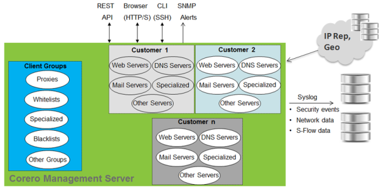

Show search and navigation tools
The Corero Management Server (CMS) is a comprehensive and centralized tool for managing all aspects of network protection for your servers and other computing resources that reside inside your organization's firewall. The CMS achieves this through its control of appliance configuration for each site. The CMS enables you to define the server and client profiles, shun labels, header blocking conditions, and server protection policies that protect your organization's critical infrastructure. In addition, the CMS provides detailed real-time visibility into the traffic entering your network at each step, as it is first observed, assessed for threats, treated for threats, and subsequently allowed to enter protected areas of your network.
The CMS's organization reflects the structure of the underlying data models that make up the appliance configuration, enabling you to access and configure all aspects of appliance behavior. The CMS may be accessed primarily through its web UI (all major web browsers, including Internet Explorer, Firefox, Chrome, and Safari are supported), but a fully functional command line interface (CLI) and REST interface are present, as well. All user interfaces provide access and control to the same configuration elements, but the web interface provides the most dense display of configuration controls and richest visualization tools for statistics, events, and reports.
The CMS is run on a Linux virtual machine, delivered in a Corero Managed Service Appliance.
The CMS's support for configuring and managing appliances includes:
This illustration shows a simple representation of the CMS and its relationship to appliances and various user interfaces:
